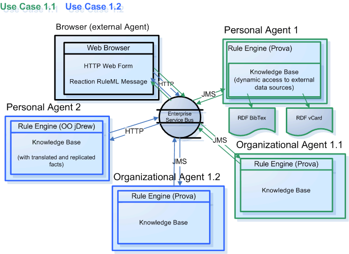

Rule Interchange Use Case 1.1 and 1.2
Description:
This use case demonstrates the communication between an external agent (Browser) -> organizational agent -> personal agent using Reaction RuleML as interchange format and HTTP (external communication) and JMS (internal communication) as transport protocol.
The user sends a query to the organization agent. The organization agent delegates the query to the personal agent.
The personal agent derives the query and sends back the answer to the organization agent. The organization agent returns the answer to the user (browser).
There are two scenarios:
Use Case 1.1: Browser -> Organization1.1 (Prova) -> Personal Agent (Prova)
(Use <oid><Ind>Organization1</Ind></oid> to send a message to the Organization1 (Use Case 1.1))
Use Case 1.2: Browser -> Organization1.2 (Prova) -> Personal Agent (OO jDrew)
(Use <oid><Ind>Organization2</Ind></oid> to send a message to the Organization2 (Use Case 1.2))

Query interfaces
(you might copy and paste the examples):
- person(Name,Role, Title, EMail, Telephone) [example]
- reference(Title,FirstAuthor) [example]
Sources:
Rule Base of the Organizational Agent (Prova)
Rule Base of the Personal Agent 1.1 (Prova)
Rule Base of the Personal Agent 1.2 (OO jDrew)
RDF vCard of Personal Agent
RDF bibtex of Personal Agent
|